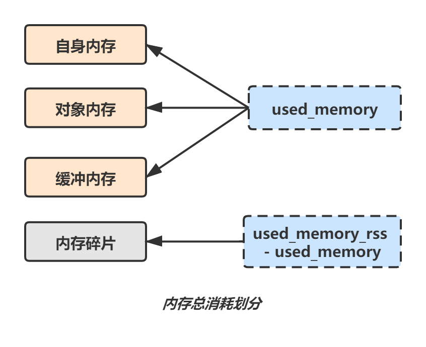
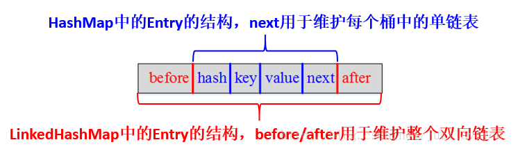

分布式进阶（十一）——分布式框架之高性能：Redis内存管理
本章，我们来看看Redis的内存管理，主要包含Redis的内存模型、内存管理方式以及缓存淘汰策略。
一、内存模型
1.1 对象内存
对象内存，是Redis内存占用最大的一块，存储着用户所有的数据。Redis所有的数据都采用key-value格式，每次创建键值对时，至少创建两个类型对象：key对象和value对象。key对象都是字符串，value对象包含五种数据结构类型。所以，对象内存消耗可以简单理解为sizeof（keys）+sizeof（values）。
1.2 缓冲内存
缓冲内存主要包括：客户端缓冲、复制积压缓冲区、AOF缓冲区：
客户端缓冲：指的是所有接入到Redis服务器TCP连接的输入输出缓冲；
复制积压缓冲区：Redis在2.8版本之后提供了一个可重用的固定大小缓冲区，用于实现部分复制功能，根据
repl-backlog-size参数控制，默认1MB。对于复制积压缓冲区，只有Master节点存在，所有Slave节点共享此缓冲区。AOF缓冲区：用于在Redis重写期间保存最近的写入命令，其消耗的内存取决于AOF重写时间和写入量，这部分空间占用通常很小。
1.3 子进程内存消耗
子进程内存消耗，主要是在执行AOF/RDB重写时，Redis创建的子进程内存消耗。Redis执行fork操作产生的子进程，内存占用量与父进程相同，理论上需要一倍的物理内存来完成重写操作。
Redis提供了一个命令：info memory，可以获取自身使用内存的统计数据：
| 属性名 | 属性说明 |
|---|---|
| used_memory | Redis分配器分配的内存总量，也就是内部存储的所有数据内存占用量 |
| used_memory_rss | 从操作系统的角度显示Redis进程占用的物理内存总量 |
| mem_fragmentation_ratio | 内存碎片率，used_memory_rss/used_memory的比值 |
我们需要重点关注的指标有：used_memory_rss和used_memory，以及它们的比值mem_fragmentation_ratio ：
- mem_fragmentation_ratio>1时，说明多出的部分内存并没有用于数据存储，而是被内存碎片所消耗；
- mem_fragmentation_ratio<1时 ，说明可能是操作系统把Redis内存swap到磁盘导致。

二、内存管理
Redis主要通过控制内存上限和回收策略实现内存管理。控制内存上限就是使用maxmemory参数限制最大可用内存，当超出内存上限时，将使用一些算法来释放内存空间。所以控制内存上限的方法一般也叫缓存淘汰策略。
2.1 回收策略
我们在使用Redis进行set key的时候，都可以设置一个过期时间（expire time），比如指定key只能存活1个小时，到期后这个key对应的缓存就会失效。
那么Redis到底是如何进行到期缓存的回收的呢？答案就是采用定期删除和惰性删除机制实现过期键的内存回收。
定期删除
所谓定期删除，指的是Redis默认每隔100ms就随机抽取一些设置了过期时间的key，检查其是否过期，如果过期就删除。
注意：这里不是每隔100ms就遍历所有的设置了过期时间的key，那样就是一场性能上的灾难，比如如果遍历检查10万个key，那redis基本上就挂了，CPU负载会很高的。
但是问题是，定期删除可能会导致很多过期key到了时间并没有被删除掉，那就要靠惰性删除了。
惰性删除
所谓惰性删除，就是指当客户端获取某个key的时候，Redis会检查这个key是否设置了过期时间，如果设置了是否已过期？如果过期了就会删除，不会给客户端返回任何东西。
定期删除和惰性删除只能解决内存空间足够情况下的内存回收，如果大量过期key堆积在内存里，导致Redis内存耗尽，或者说内存使用达到了maxmemory上限，此时则会对内存进行淘汰。
2.2 淘汰策略
Redis一共有六种可选的缓存淘汰策略：
noeviction：默认策略，不会删除任何数据，拒绝所有写入操作并返回客户端错误信息；（一般没人用）
volatile-lru：根据LRU算法，删除设置了超时属性（expire）的键，直到腾出足够空间为止。如果没有可删除的键对象，回退到noeviction策略；（一般很少使用）
allkeys-lru：根据LRU算法删除key，不管数据有没有设置超时属性，直到腾出足够空间为止；（最常用）
allkeys-random：随机删除所有键，直到腾出足够空间为止；（一般没人用）
volatile-random：随机删除过期键，直到腾出足够空间为止；
volatile-ttl：在设置了过期时间的键空间中，有更早过期时间的key优先移除。如果没有，回退到noeviction策略。
三、LRU算法
LRU算法是一种常用的缓存淘汰算法。LRU的淘汰规则是基于访问时间。每个缓存都有个最近使用时间戳，每次缓存命中的时候都会更新这个时间戳为当前时间点，每次淘汰缓存的时候，就淘汰时间戳距当前时间点最早的数据。
3.1 LinkedHashMap
JDK集合框架中有一个类LinkedHashMap，顾名思义，是一种链表与Hash结合的数据结构。

LinkedHashMap是一种将所有Entry节点链入一个双向链表的HashMap，额外维护了一个双向链表用于保持迭代顺序（按元素插入顺序，尾插法）：

LinkedHashMap中有一个accessOrder字段，true表示按照LRU原则维护元素次序，false表示则表示按插入顺序维护元素次序：
public LinkedHashMap(int initialCapacity, float loadFactor, boolean accessOrder) {
super(initialCapacity, loadFactor);
this.accessOrder = accessOrder;
}
所以，基于LinkedHashMap的这种特性，我们很容易实现一个基于LRU算法的简单缓存：
public class LRUCache<K, V> extends LinkedHashMap<K, V> {
/**
* 缓存数据量大小
*/
private final int CACHE_SIZE;
public LRUCache(int cacheSize) {
// 设置hashmap的初始大小，最后一个true让linkedhashmap按照访问顺序来进行排序
super((int) Math.ceil(cacheSize / 0.75) + 1, 0.75f, true);
CACHE_SIZE = cacheSize;
}
/**
* 当map中的数据量大于最大缓存数据量时，就自动删除最老的数据
*/
@Override
protected boolean removeEldestEntry(Map.Entry eldest) {
return size() > CACHE_SIZE;
}
}
四、总结
本章，我介绍了Redis的内存管理，核心是内存回收策略和缓存淘汰策略。